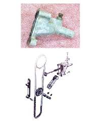
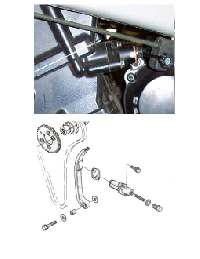
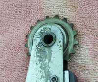
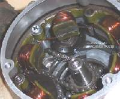
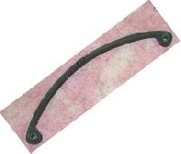
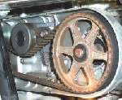
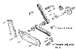
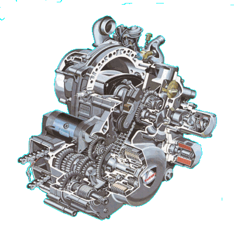
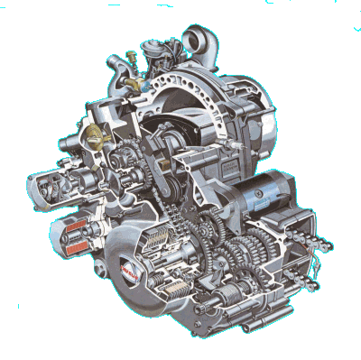

¶ When we install the cams and time them we have one last thing to do, adjust the tension on the cam chain.
There are only two types of cam chain adjusters.
- Manual adjustment.
- Automatic adjustment.
 Manual Adjuster. |
 Automatic Adjuster. |
Both types have one thing in common. You must install them in the completely off (Loosest) position. That is, with no tension placed on the Cam Chain. You do this by removing the spring from the end of the adjuster shaft, releasing the one way lock, if there is one, and push the adjuster shaft to it's loosest postion or by pushing the adjuster shaft, under spring pressure, in and locking it with the adjuster pinch bolt. Either way, the adjuster must be in the loosest position. If it is not at the loosest position it will OVER TIGHTEN the Cam Chain and possible BREAK the adjuster at worst. At best it will limit the RPM of your engine
The part of the adjuster that pushes on the Cam Chain itself is either a sprocket, a rubber roller or a long, thin, flexible, steel, rubber covered plate and is usually in the rear of the engine. The adjuster spring pushes the sprocket, roller or plate against the Cam Chain tightening it. This arrangement allows the Cam Chain to wear (Stretch) and still remain at the proper tension. It also allows the Cam Chain to be a bit loose for easier instillation on the Camshaft sprocket(s). This is good because even with the adjuster not installed, the fitting of the Cam Chain can be a bit tight on some engines. The adjuster spring may push or pull on the adjuster sprocket or roller. If the adjuster is a plate it may pull on both ends of the adjuster making it bow in the middle and push on the Cam Chain or the plate may hinge on one end and the adjuster spring and rod push on the center of the plate.
 Cam Chain Adjuster Sprocket. |
 Cam Chain Adjuster Roller. |
 Cam Chain Adjuster Plate. |
Most of the newer engines (say from the early 1980s on, give or take) have the non adjustable type of Cam Chain tensioner. You simply install it and it works. When the chain get noisy you put a new Cam Chain on. Not much else you can do.
Older engines usually have the adjustable type. These have a pinch bolt that locks the adjuster shaft in position. As the Cam Chain wears (Stretches) it makes more noise. You usually have to set the engine to some kind of mark on the flywheel. This moves all the Cam Chain slack to where the adjuster is. Then loosen the pinch bolt on the adjuster. If it's well worn you will hear a muffled bang or pop as the adjuster takes up the slack in the Cam Chain. Tighten the pinch bolt and all is well. Sometimes the engine will need to be idling when you make the adjustment. Other engines will have a screw, with a lock nut, that adds tension to the adjuster spring. When the tensioner pin is flush with the spring tensioner, tighten the lock nut. Still other engines will have both adjustable and non-adjustable tensioners, depending on the year the engine was made ! The early Honda 350cc twins had a tensioner controled by oil pressure. Check your shop manual.

If the Cam Chain is real noisy and the noise does not go away when you adjust it, the Cam Chain is worn out and needs to be replaced. Just like with the rear drive chain and sprockets, the Cam Chain sprockets should be replaced too. If the engine was designed with removable sprockets this can be quite easy. On other engines things are not so easy. The sprocket can be machined on the crankshaft. Like the Kawasaki ZX1100. The only way on these engines to replace the Cam Sprocket is to replace the crankshaft. Yeah, I know, stupid, but they do it. Other engines have their Cam Sprockets tightly press fitted to the crank. Like the Honda XR200. You must heat the crank up and use a gear puller to pull it off the end of the crankshaft. Now the fun part. You cool the crankshaft in a freezer, heat up the new Cam Sprocket to about 250 degrees and pop it on while aligning one of the gear teeth to the woodruff key on the crankshaft. That is so the valve timing stays correct. Again, not too smart, but at least it's doable.
If you don't deal with the worn Cam Chain it can rattle around in there and do nasty stuff. It can jump a tooth, throwing the valves out of time, allowing them to hit the piston or it can saw it's way through the side of the engine and start an oil leak, not to mention putting all kinds of metal filings into your engine oil. If you can't replace the Cam Chain, you can try to add a little more tension to the Cam Cahin adjuster by installing a stronger tensioner spring or by pushing on the tensioner rod and locking it in position with the tensioner rod lock bolt and nut. Try to put just enough pressure to stop the noise. Too much pressure and it can put to much friction on the Cam Chain and keep the engine from revving to full RPMs. Now understand, if you do this, it's a Band-Aid and not a cure. The real cure is a new Cam Chain.
There is always one and sometimes several Cam Chain Guides. These guides can be rollers, Sprockets or plates. They keep the Cam Chain on track as it goes through the engine. Some of these guides can be quite complicated like these from a Kawasaki 700 V-Twin. Check them for wear when you replace the Cam Chain.
 

 |
 |
Copyright © 1999-2006 dansmc.com. All rights reserved.